03 - Часові ряди та їх візуалізація
Прогнозування часових рядів
Ігор Мірошниченко
КНЕУ::ІІТЕ
оновлено: 2022-09-13
Часові ряди
Часові ряди
Часовий ряд (ЧР) - послідовність значень деякої змінної (або змінних), що зареєстровані через визначений проміжок часу (регулярні або нерегулярні).
Одна змінна - одномірний часовий ряд
Декілька змінних - багатовимірний часовий ряд
Компоненти часового ряду
Часовий ряд \(y_t\), в моменти часу \(t\) можна розкласти на компоненти:
Тренд, \(T_t\): довгострокова тенденція зміни даних (підвищення або зменшення). Може бути лінійним або нелінійним. Напрямок може змінюватися.
Сезонність, \(S_t\): повторюваність патернів поведінки часового ряду з фіксованою частотою. Можуть бути в середині сезону (одного року).
Циклічність, \(C_t\): довгострокові патерни поведінки часового ряду, які мають відносно нефіксовану періодичність. Наприклад цикл економічного розвитку, цикл розробки програмного засобу тощо. Як правило, періодичність від двох років.
Випадкова компонента, \(R_t\): випадкові коливання часового ряду (шум), який не можемо пояснити.
Компоненти часового ряду
Функціональний зв’язок між компонентами може бути будь-який, але виділяють класичні:
адитивна модель: \(y_t = T_t + S_t + C_t + R_t\)
мультиплікативна модель: \(y_t = T_t * S_t * C_t * R_t\)
Часто довжини часового ряду недостатньо для визначення циклічної складової і її виключають із дослідження.
Стаціонарність ЧР
Стаціонарність - властивість ЧР не змінювати свої властивості з плином часу, а саме:
постійність математичного сподівання
постійність дисперсії (гомоскедастичність, згадуємо економетрику)
незалежність коваріаційної функції
Формат даних tsibble
tsibble
В концепції охайних даних tidyverse, поруч з вже відомим форматом tibble для часових рядів використовується tsibble:
дані зберігаються в табличному вигляді
в таблиці повинно бути мінімум два стовпчики: мітки часу у хронологічному порядку (
index) та значення кількісної змінної.в таблиці може міститися декілька часових рядів, за рахунок використання групуючих змінних (
key), які вказують на належність спостережень до відповідного ЧРбудь-яке значення в таблиці можна унікально ідентифікувати за допомогою поєднання значень індексів та ключів.
tsibble
Для створення об’єкту tsibble використовуються функції tsibble() або as_tsibble(), які мають наступні агрументи:
...- набір пар данихx- об’єкт даних з яких треба створити ЧР, це може бути числовий вектор, матриця, дата фрейм.index- змінна часу, яка може бути від наносекунд до року.key- одна або декілька групуючих змінних, які визначають належність даних до відповідного ЧР. Назви змінних записуються без лапок та об’єднуються за допомогою конкатенаціїc().regular- логічний аргумент, який вказує на врахування регулярності ЧР.validate- логічний аргумент, який дозволяє провести перевірку унікальності кожного спостереження для кожної париindex-key..drop- логічний аргумент, який дозволяє виключити з таблиці пусті значення ЧР.
Приклад 1
tsibble()
Приклад 2
# A tibble: 5 x 3
id Date Weekly_Sales
<fct> <date> <dbl>
1 1_1 2010-02-05 24924.
2 1_1 2010-02-12 46039.
3 1_1 2010-02-19 41596.
4 1_1 2010-02-26 19404.
5 1_1 2010-03-05 21828.timetk::walmart_sales_weekly %>%
select(id, Date, Weekly_Sales) %>%
as_tsibble(index = Date, key = c(id))# A tsibble: 1,001 x 3 [7D]
# Key: id [7]
id Date Weekly_Sales
<fct> <date> <dbl>
1 1_1 2010-02-05 24924.
2 1_1 2010-02-12 46039.
3 1_1 2010-02-19 41596.
4 1_1 2010-02-26 19404.
5 1_1 2010-03-05 21828.
6 1_1 2010-03-12 21043.
7 1_1 2010-03-19 22137.
8 1_1 2010-03-26 26229.
9 1_1 2010-04-02 57258.
10 1_1 2010-04-09 42961.
# ... with 991 more rowsПриклад 2

Обробка пропущених значень
Пропущені значення
markdown <- timetk::walmart_sales_weekly %>%
select(id, Date, 11:15) %>%
pivot_longer(!c(id, Date), names_to = "Markdown", values_to = "Value") %>%
as_tsibble(index = Date, key = c(id, Markdown))
markdown# A tsibble: 5,005 x 4 [7D]
# Key: id, Markdown [35]
id Date Markdown Value
<fct> <date> <chr> <dbl>
1 1_1 2010-02-05 MarkDown1 NA
2 1_1 2010-02-12 MarkDown1 NA
3 1_1 2010-02-19 MarkDown1 NA
4 1_1 2010-02-26 MarkDown1 NA
5 1_1 2010-03-05 MarkDown1 NA
6 1_1 2010-03-12 MarkDown1 NA
7 1_1 2010-03-19 MarkDown1 NA
8 1_1 2010-03-26 MarkDown1 NA
9 1_1 2010-04-02 MarkDown1 NA
10 1_1 2010-04-09 MarkDown1 NA
# ... with 4,995 more rowsПропущені значення
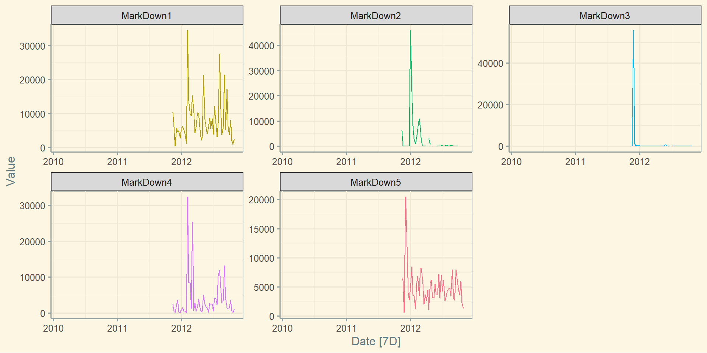Фільтрація індексу: filter_index()
# A tsibble: 455 x 4 [7D]
# Key: id, Markdown [35]
id Date Markdown Value
<fct> <date> <chr> <dbl>
1 1_1 2012-08-03 MarkDown1 27585.
2 1_1 2012-08-10 MarkDown1 11436.
3 1_1 2012-08-17 MarkDown1 3662.
4 1_1 2012-08-24 MarkDown1 6238.
5 1_1 2012-08-31 MarkDown1 21443.
6 1_1 2012-09-07 MarkDown1 5205.
7 1_1 2012-09-14 MarkDown1 17213.
8 1_1 2012-09-21 MarkDown1 6352.
9 1_1 2012-09-28 MarkDown1 3666.
10 1_1 2012-10-05 MarkDown1 8078.
# ... with 445 more rows# A tsibble: 455 x 4 [7D]
# Key: id, Markdown [35]
id Date Markdown Value
<fct> <date> <chr> <dbl>
1 1_1 2012-08-03 MarkDown1 27585.
2 1_1 2012-08-10 MarkDown1 11436.
3 1_1 2012-08-17 MarkDown1 3662.
4 1_1 2012-08-24 MarkDown1 6238.
5 1_1 2012-08-31 MarkDown1 21443.
6 1_1 2012-09-07 MarkDown1 5205.
7 1_1 2012-09-14 MarkDown1 17213.
8 1_1 2012-09-21 MarkDown1 6352.
9 1_1 2012-09-28 MarkDown1 3666.
10 1_1 2012-10-05 MarkDown1 8078.
# ... with 445 more rowsВизначення наявності пропусків: has_gaps()
Перевірмо наявність пропусків
# A tibble: 35 x 3
id Markdown .gaps
<fct> <chr> <lgl>
1 1_1 MarkDown1 FALSE
2 1_1 MarkDown2 FALSE
3 1_1 MarkDown3 FALSE
4 1_1 MarkDown4 FALSE
5 1_1 MarkDown5 FALSE
6 1_3 MarkDown1 FALSE
7 1_3 MarkDown2 FALSE
8 1_3 MarkDown3 FALSE
9 1_3 MarkDown4 FALSE
10 1_3 MarkDown5 FALSE
# ... with 25 more rowsА тепер якщо прибрати NA
# A tibble: 35 x 3
id Markdown .gaps
<fct> <chr> <lgl>
1 1_1 MarkDown1 FALSE
2 1_1 MarkDown2 TRUE
3 1_1 MarkDown3 TRUE
4 1_1 MarkDown4 FALSE
5 1_1 MarkDown5 FALSE
6 1_3 MarkDown1 FALSE
7 1_3 MarkDown2 TRUE
8 1_3 MarkDown3 TRUE
9 1_3 MarkDown4 FALSE
10 1_3 MarkDown5 FALSE
# ... with 25 more rowsМісцезнаходження пропусків: scan_gaps()
Визначмо де саме пропущенні значення
# A tsibble: 70 x 3 [7D]
# Key: id, Markdown [14]
id Markdown Date
<fct> <chr> <date>
1 1_1 MarkDown2 2012-04-06
2 1_1 MarkDown2 2012-04-27
3 1_1 MarkDown2 2012-05-04
4 1_1 MarkDown2 2012-05-11
5 1_1 MarkDown2 2012-05-18
6 1_1 MarkDown2 2012-05-25
7 1_1 MarkDown2 2012-10-05
8 1_1 MarkDown2 2012-10-12
9 1_1 MarkDown2 2012-10-19
10 1_1 MarkDown3 2012-06-29
# ... with 60 more rowsКількість пропусків: count_gaps()
# A tibble: 28 x 5
id Markdown .from .to .n
<fct> <chr> <date> <date> <int>
1 1_1 MarkDown2 2012-04-06 2012-04-06 1
2 1_1 MarkDown2 2012-04-27 2012-05-25 5
3 1_1 MarkDown2 2012-10-05 2012-10-19 3
4 1_1 MarkDown3 2012-06-29 2012-06-29 1
5 1_3 MarkDown2 2012-04-06 2012-04-06 1
6 1_3 MarkDown2 2012-04-27 2012-05-25 5
7 1_3 MarkDown2 2012-10-05 2012-10-19 3
8 1_3 MarkDown3 2012-06-29 2012-06-29 1
9 1_8 MarkDown2 2012-04-06 2012-04-06 1
10 1_8 MarkDown2 2012-04-27 2012-05-25 5
# ... with 18 more rowsЗаповнення пропусків: fill_gaps()
Заповнення NA
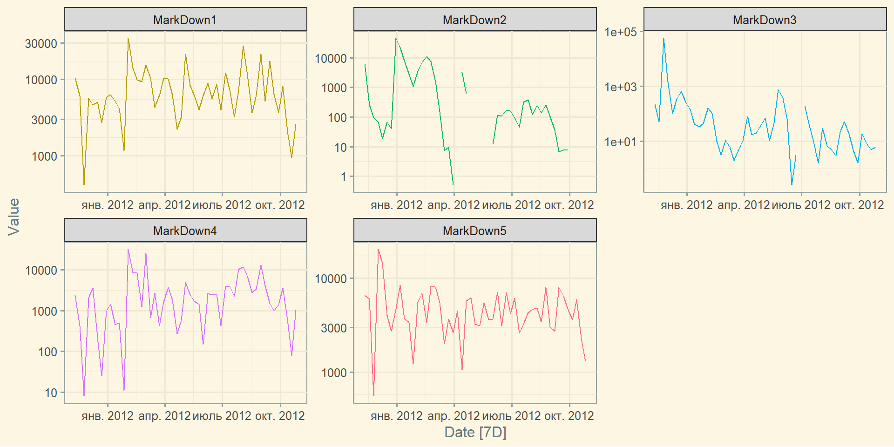Заповнення пропусків: fill_gaps()
Заповнення сумою значень у кожній групі
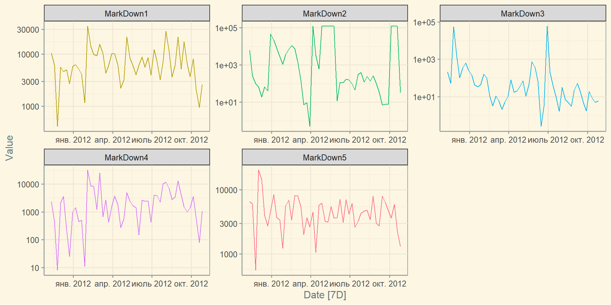Заповнення пропусків: fill_gaps()
Заповнення середнім по кожній групі
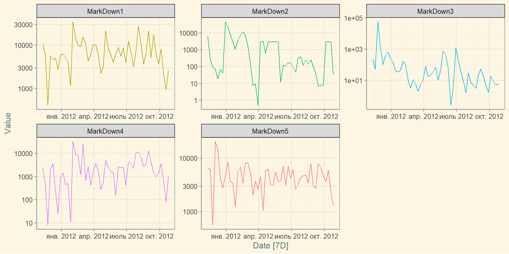Заповнення пропусків: fill_gaps()
Заповнення медіаною по кожній групі
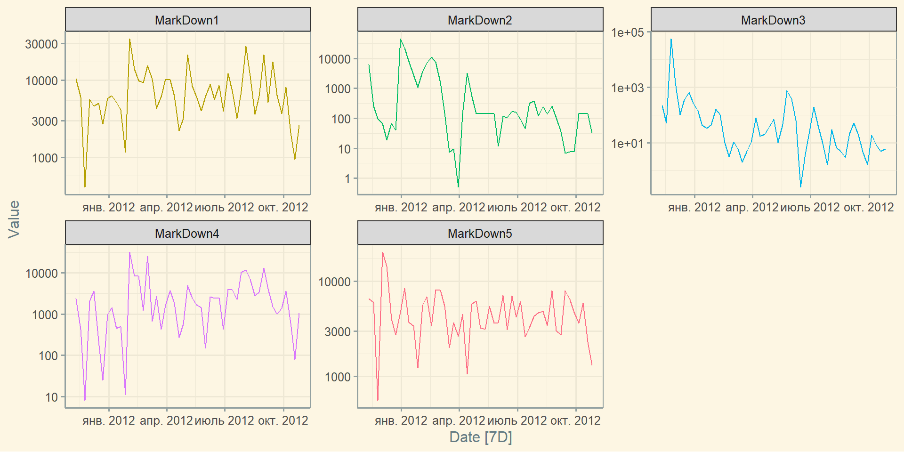Заповнення пропусків: tidyr::fill()
Заповнення останніми значеннями
Агрегація спостережень
Групування за датою: index_by()
Збережемо заповнений датасет
markdown_fill <- markdown %>%
drop_na() %>%
group_by_key() %>%
fill_gaps(Value = median(Value))
markdown_fill# A tsibble: 1,785 x 4 [7D]
# Key: id, Markdown [35]
# Groups: id, Markdown [35]
id Date Markdown Value
<fct> <date> <chr> <dbl>
1 1_1 2011-11-11 MarkDown1 10383.
2 1_1 2011-11-18 MarkDown1 6074.
3 1_1 2011-11-25 MarkDown1 410.
4 1_1 2011-12-02 MarkDown1 5630.
5 1_1 2011-12-09 MarkDown1 4641.
6 1_1 2011-12-16 MarkDown1 5011.
7 1_1 2011-12-23 MarkDown1 2725.
8 1_1 2011-12-30 MarkDown1 5762.
9 1_1 2012-01-06 MarkDown1 6277.
10 1_1 2012-01-13 MarkDown1 5183.
# ... with 1,775 more rowsГрупування за датою: index_by()
Варіанти групування
| Групування | Функція |
|---|---|
| Рік | year() |
| Квартал | yearquarter() |
| Місяць | yearmonth() |
| Тиждень | yearweek() |
| День | as.Date(), as_date(), day() |
| Година | hour() |
Групування за датою: index_by()
Згрупуємо дані по роках:
markdown_fill %>%
index_by(Year = ~ year(.)) %>%
summarise(
mean_value = mean(Value),
median_value = median(Value),
sd_value = sd(Value)
)# A tsibble: 70 x 6 [1Y]
# Key: id, Markdown [35]
# Groups: id [7]
id Markdown Year mean_value median_value sd_value
<fct> <chr> <dbl> <dbl> <dbl> <dbl>
1 1_1 MarkDown1 2011 5080. 5320. 2864.
2 1_1 MarkDown1 2012 8651. 6277. 6968.
3 1_1 MarkDown2 2011 6584. 83 16070.
4 1_1 MarkDown2 2012 1678. 145. 4032.
5 1_1 MarkDown3 2011 7352. 304. 19583.
6 1_1 MarkDown3 2012 57.6 18.2 127.
7 1_1 MarkDown4 2011 1225. 706. 1341.
8 1_1 MarkDown4 2012 4215. 2262. 6412.
9 1_1 MarkDown5 2011 7440. 5362. 6662.
10 1_1 MarkDown5 2012 4568. 4213. 2025.
# ... with 60 more rowsГрупування за датою: index_by()
Згрупуємо дані по місяцям:
markdown_fill %>%
index_by(Year = ~ yearmonth(.)) %>%
summarise(
mean_value = mean(Value),
median_value = median(Value),
sd_value = sd(Value)
)# A tsibble: 420 x 6 [1M]
# Key: id, Markdown [35]
# Groups: id [7]
id Markdown Year mean_value median_value sd_value
<fct> <chr> <mth> <dbl> <dbl> <dbl>
1 1_1 MarkDown1 2011 нояб. 5622. 6074. 5002.
2 1_1 MarkDown1 2011 дек. 4754. 5011. 1222.
3 1_1 MarkDown1 2012 янв. 4191. 4662. 2199.
4 1_1 MarkDown1 2012 февр. 16931. 11899. 11940.
5 1_1 MarkDown1 2012 март 9300. 10310. 4328.
6 1_1 MarkDown1 2012 апр. 5440. 4704. 3545.
7 1_1 MarkDown1 2012 май 9959. 7253. 7757.
8 1_1 MarkDown1 2012 июнь 6622. 6086. 2071.
9 1_1 MarkDown1 2012 июль 7449. 7183. 3690.
10 1_1 MarkDown1 2012 авг. 14073. 11436. 10169.
# ... with 410 more rowsГрупування за датою: index_by()
Візуалізація:
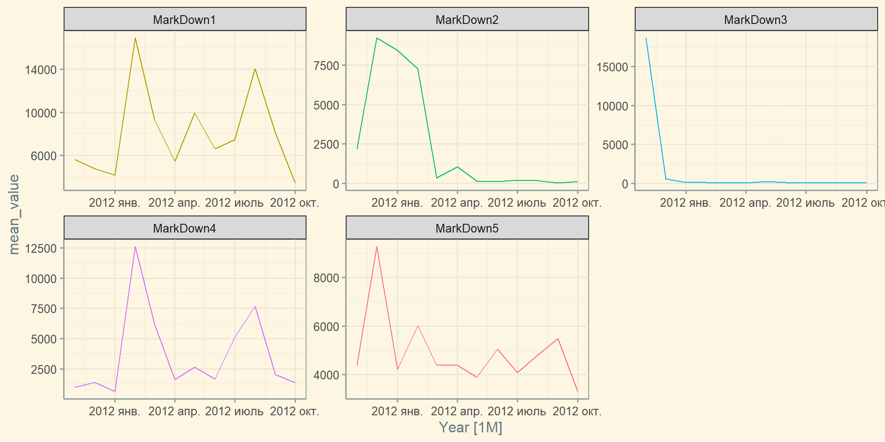Візуалізація часових рядів
Welmart
Зберемо датасет
walmart_sales <- timetk::walmart_sales_weekly %>%
select(id, Date, Weekly_Sales, Temperature) %>%
as_tsibble(index = Date, key = id)
walmart_sales# A tsibble: 1,001 x 4 [7D]
# Key: id [7]
id Date Weekly_Sales Temperature
<fct> <date> <dbl> <dbl>
1 1_1 2010-02-05 24924. 42.3
2 1_1 2010-02-12 46039. 38.5
3 1_1 2010-02-19 41596. 39.9
4 1_1 2010-02-26 19404. 46.6
5 1_1 2010-03-05 21828. 46.5
6 1_1 2010-03-12 21043. 57.8
7 1_1 2010-03-19 22137. 54.6
8 1_1 2010-03-26 26229. 51.4
9 1_1 2010-04-02 57258. 62.3
10 1_1 2010-04-09 42961. 65.9
# ... with 991 more rowsБазова візуалізація: autoplot()
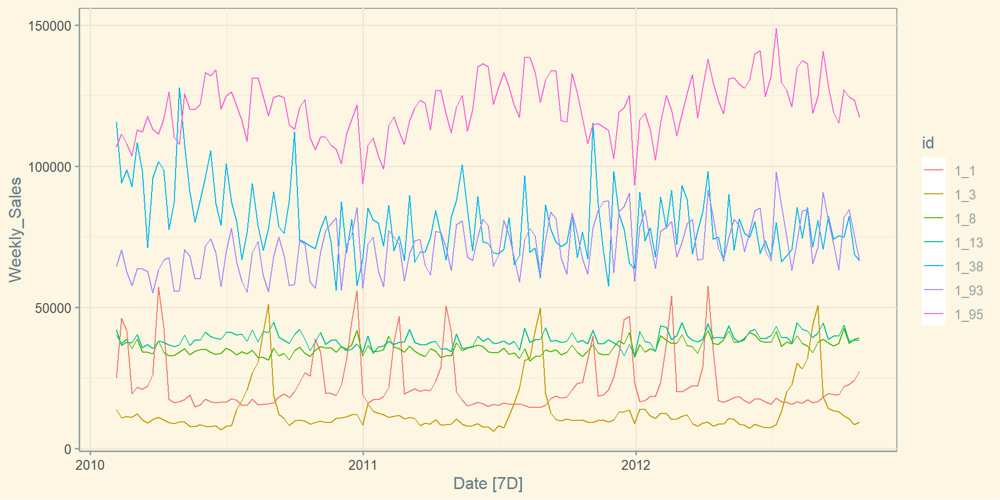Базова візуалізація: facet_grid()
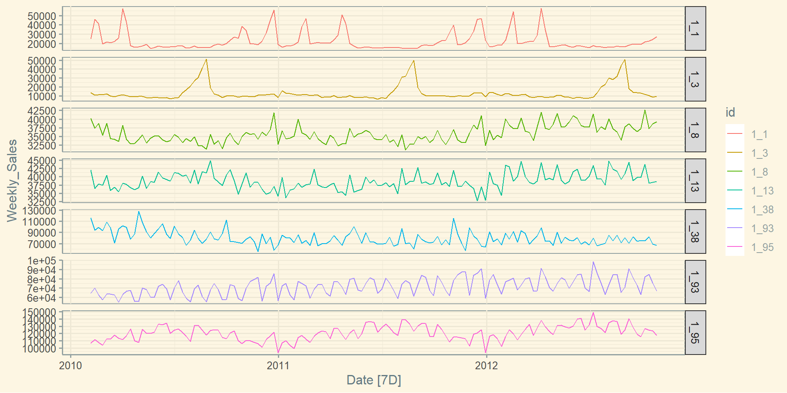Базова візуалізація: facet_wrap()

Базова візуалізація: geom_smooth()
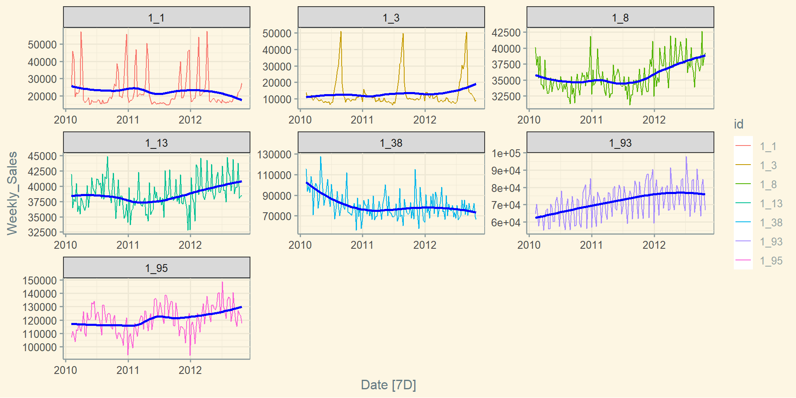Графік сезонності: gg_season()
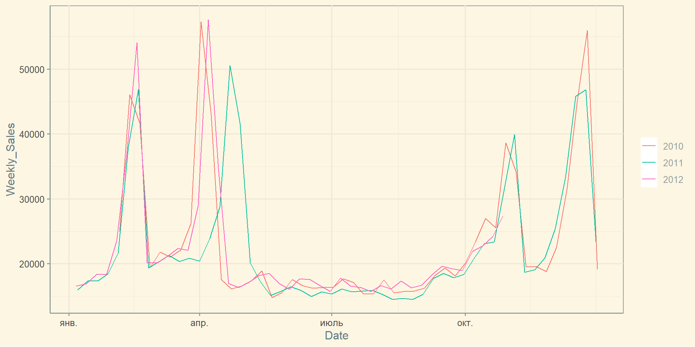Графік сезонності: gg_season()
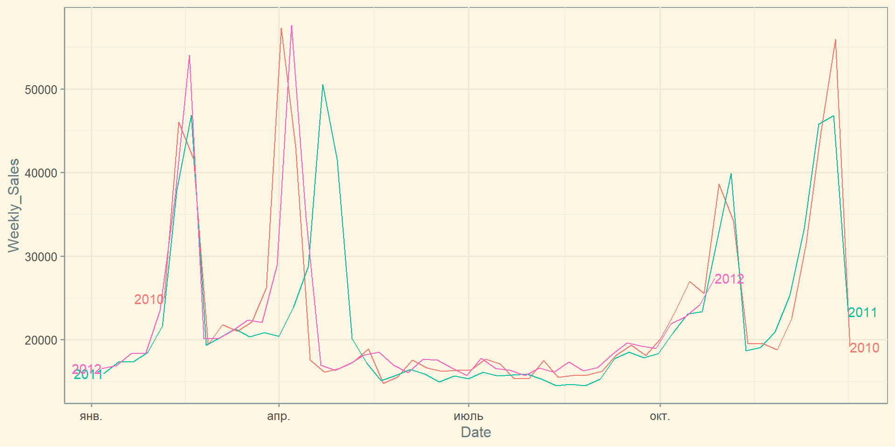Точковий графік
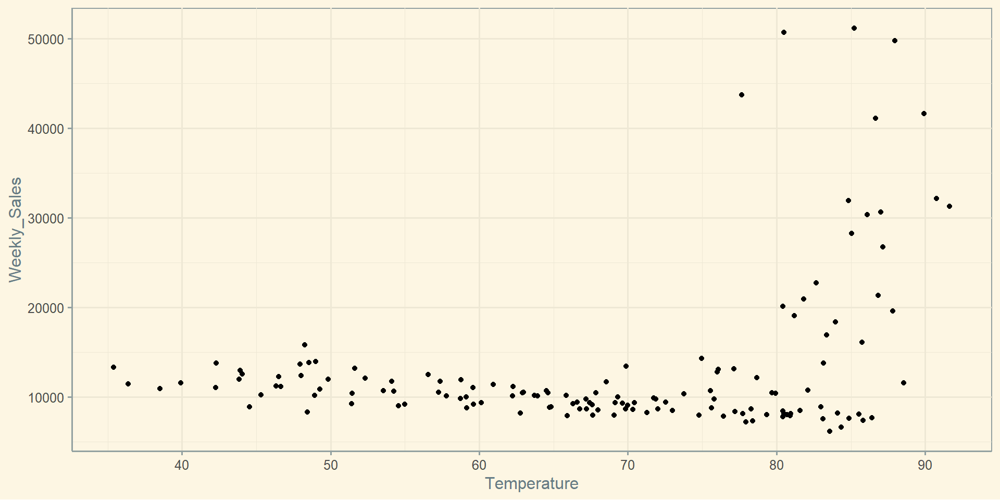Графік лагів: gg_lag()
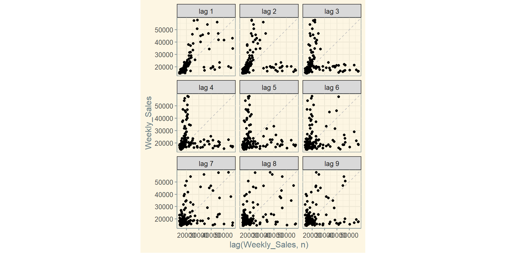Графік кореляцій: ggpairs()
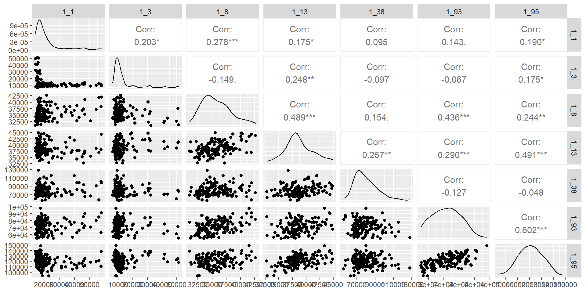Корелограма автокореляції: ACF()
\[r_k = \frac{\sum_{t=k+1}^T(y_t - \overline{y})(y_{t-k} - \overline{y})}{\sum_{t=1}^T(y_t - \overline{y})^2}\]
\(T\) - довжина ЧР
# A tsibble: 21 x 3 [7D]
# Key: id [1]
id lag acf
<fct> <lag> <dbl>
1 1_1 7D 0.561
2 1_1 14D 0.120
3 1_1 21D -0.0222
4 1_1 28D -0.0622
5 1_1 35D -0.0390
6 1_1 42D 0.106
7 1_1 49D 0.364
8 1_1 56D 0.363
9 1_1 63D 0.168
10 1_1 70D 0.0327
# ... with 11 more rowsДодаткове оформлення графіків
walmart_sales %>%
autoplot(Weekly_Sales) +
geom_smooth(se = FALSE, colour = "blue") +
facet_wrap(~ id, scales = "free") +
labs(
title = "Sample Time Series Retail Data",
subtitle = "Walmart Recruiting Store Sales Forecasting Competition",
caption = "Ihor Miroshnychenko",
x = "Day",
y = "Weekly Sales"
) +
theme(legend.position = "none")Дякую за увагу!
ihor.miroshnychenko@kneu.ua